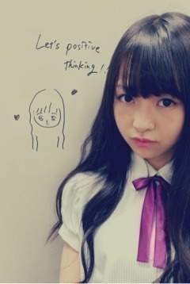

| 2012/09 15 Sat | 230回目*marika |
いつも読んでくださってる方
初めて読んでくださった方、
コメントしてくださった方、
ありがとうございますっ

かずみが描いてくれた

人中まで描いてくれたわ
今日はLessonだったあ
**********
 アイドル力ってどんなんだと
アイドル力ってどんなんだと
思いますか？
 キラキラ感
自分が犬か猫だったらどっち？
犬。
キラキラ感
自分が犬か猫だったらどっち？
犬。
落ち着きがないから

あ、いまさらだけど、
個人ＰＶのとき
Ｔシャツ以外に何か買ったの？
履いてたエンジ色の
スキニーもだよ！
あと韓国のり

秋服の男子の格好で
オススメってある？
ジャケットとかベストとか、
プレッピーなスタイル？
足首出してアクセントになる色の
かわいい靴下履くとか‼
あ、聞いてください。
兄がやっとおしゃれに
興味持ち出したよ

昆布だし派？カツオだし派？
それとも、煮干しだし派？
なんじゃその質問 笑
じゃあ煮干し！笑
うちわ作りたいんだけど、
何色が好き？オレンジ、きいろ、
きみどり、ピンクから選んで(^o^)
きみどりかな。。
でも、何色でも、
なんでも嬉しいです
！
電車の中ではどうやって過ごす？
あ、電車なうだ
BloG書くか寝るか、どっちかです

最近の伊藤ちゃんずニュース
おしえてー♪♪
だいぶ前にメールしながら
内容と全く関係ない変顔写メを
送ってたんだけど、ずっと
リアクションがなかったから
「ねぇねぇ！写メスルー⁈」
って送ったら
「え、しっかり保存してるけどな笑」
と返された。
...
 このツンデレが
このツンデレが
このツンデレが
最近おもしろい写メ撮ったんやけど、
ねねに送ろうか迷ってるんだ←ぇ
送ってもいいかな

最近Lesson帰りだっけか
おしゃべりしてたんだけど、
話してるうちに
うちらって性格が真逆だよねって
なった
 たしかにっっ
たしかにっっ
たしかにっっ
**********
ぶちゅ
ゆったんがコンビニのおでんを
買ってたよ

コンビニのおでん食べたことない。
せっちゃんと目が会う度
ニヤッてしちゃう
 きゃ
きゃ
きゃ
浪漫のとき、オランウータンの
ぬいぐるみで一緒に遊んだ笑
さっ明日は朝早い！やったー
ちゃんと起きるぞー
頑張りまりか

まりか
コメント(126)
2012/09/15 22:24